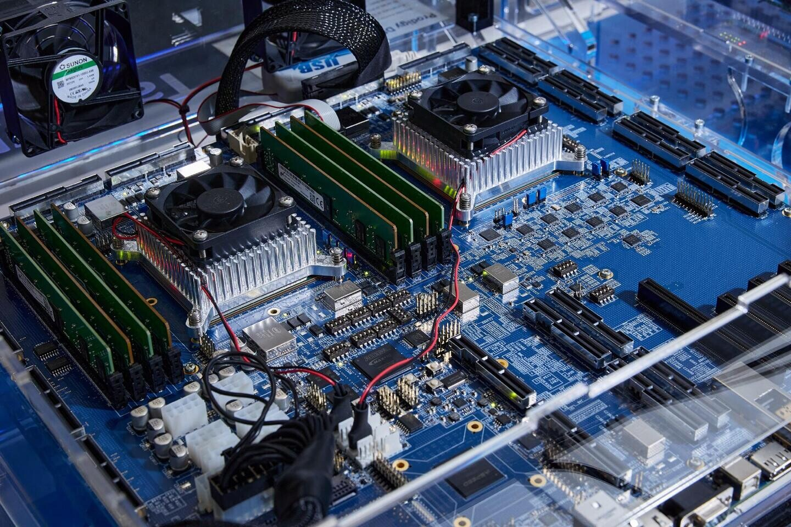
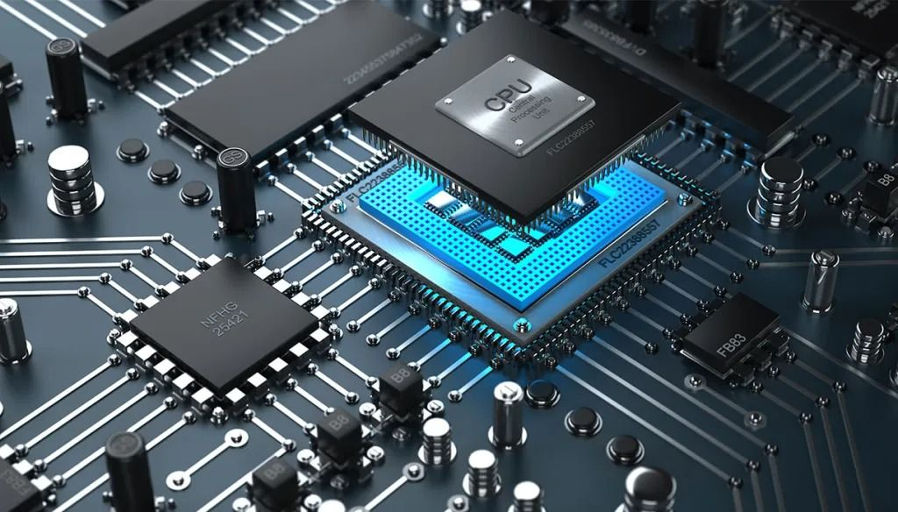
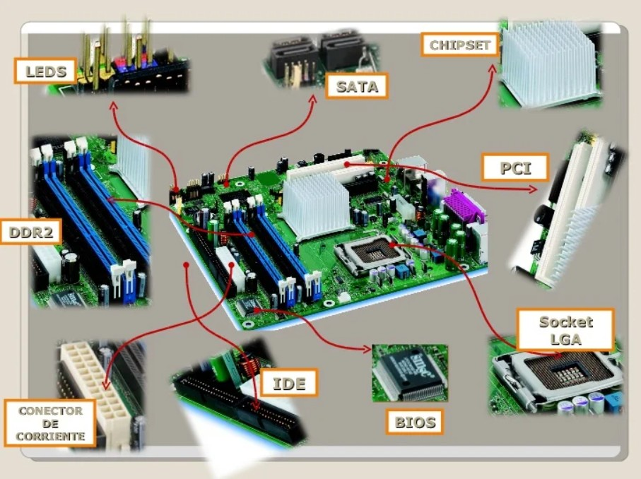
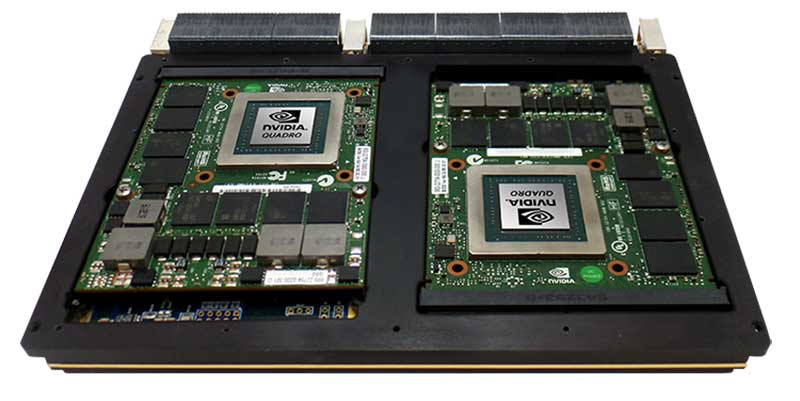

Tecnológico Nacional de México (TECNM)
Instituto Tecnológico de Saltillo
Arquitectura de Computadoras
Karla Isabel Monsivais Arevalo - 22050641
Ing. Miguel Maldonado Leza
| Unidad 1 |
Unidad 2 |
Unidad 3 |
Unidad 4 |
Prácticas |
Unidad 1: Arquitecturas de Cómputo
1.1 Modelos de arquitecturas de cómputo
Clásicas
Segmentadas
Multiprocesamiento
1.2 Análisis de los componentes
1.2.1 Arquitecturas
1.2.2 Unidad de control de procesamiento (CPU)
Unidad Aritmética Lógica (ALU)
Unidad de Control (UC)
Memoria
1.3 Memoria principal
Memoria caché
1.4 Módulos de entrada-salida
E/S programada
E/S mediante interrupciones
1.5 Acceso directo a memoria
Explicación breve del concepto.
1.6 Buses
Tipos de buses
Estructura
Jerarquía
1.7 Interrupciones
Unidad 2: Estructura y funcionamiento del procesador
2.1 Organización del procesador
2.2 Estructura de registros
Registros visibles al usuario
Control
Estado
2.3 Ciclo de la instrucción
2.3.1 Ciclo Fetch–Decode–Execute
2.3.2 Segmentación
2.3.3 Conjunto de instrucciones
2.4 Modos de direccionamiento
2.5 Casos de estudio
Unidad 3: Selección de componentes para ensamble de equipo de cómputo
3.1 Chip set
3.1.1 Unidad central de procesamiento (CPU)
3.1.2 Controlador del bus
3.1.3 Puertas de entrada/salida (E/S)
3.1.4 Controlador de interrupciones
3.1.5 Controlador de acceso directo a memoria (DMA)
3.1.6 Circuitos de temporización
3.1.7 Circuitos de control
3.1.8 Controladores de video
3.2 Aplicaciones
3.2.1 Entrada/Salida
3.2.2 Almacenamiento
3.2.3 Fuentes de alimentación
3.3 Ambientes de servicio
3.3.1 Negocios
3.3.2 Industria
3.3.3 Comercio electrónico
Unidad 4: Procesamiento paralelo
4.1 Aspectos básicos de la computación paralela
4.2 Tipos de computación paralela
4.2.1 Clasificación
4.2.2 Arquitectura de computadoras secuenciales
4.2.3 Organización de direcciones de memoria
4.3 Sistemas de memoria (compartida)
Multiprocesadores
4.3.1 Redes de interconexión dinámica (indirecta)
Medio compartido
Conmutadas
4.4 Sistemas de memoria distribuida
Multicomputadores
4.4.1 Redes de interconexión estáticas
4.5 Casos para estudio

Práctica 1
Ensamble de componentes.
Visitar

Práctica 2
Estructura y funcionamiento del procesador.
Visitar

Práctica 3
Selección de componentes para ensamble de equipo de cómputo.
Visitar

Práctica 4
Ensamble y verificación de equipo de cómputo.
Visitar